Sem turno aberto não se bipa nada. Toque Iniciar turno, escolha o turno e toque Iniciar.
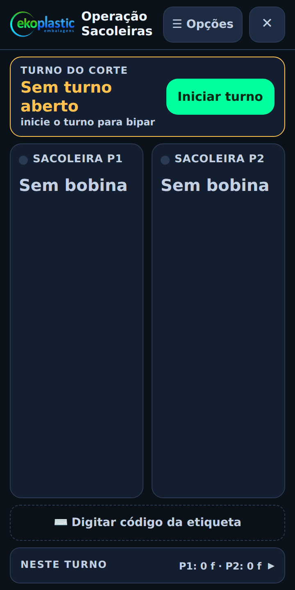
›Puxe o gatilho na etiqueta E… Confira cor, largura e peso. Toque P1 ou P2.
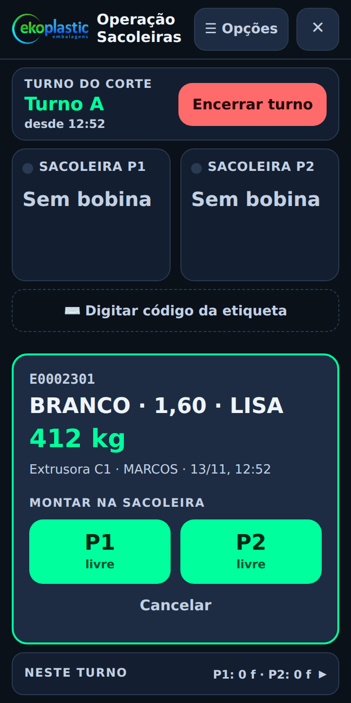
Quem bipa é quem corta a bobina. Toque o nome (ou digite) e Continuar.
O cartão mostra o formato que está cortando, a cor, o peso e quem bipou.
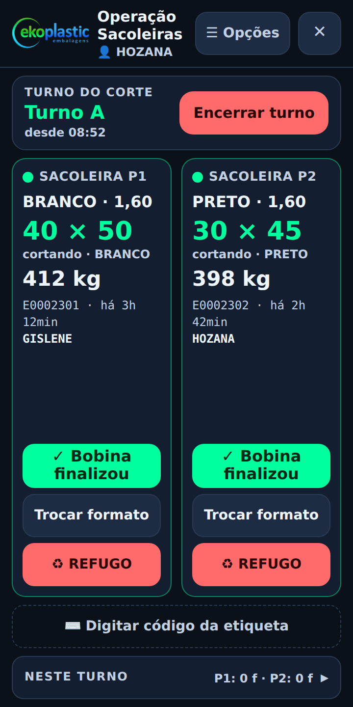
Digite os fardos fechados que o título do campo pede (às vezes é neste turno ou desde a troca). Pacotes soltos: 0 a 4. Finalizar bobina.
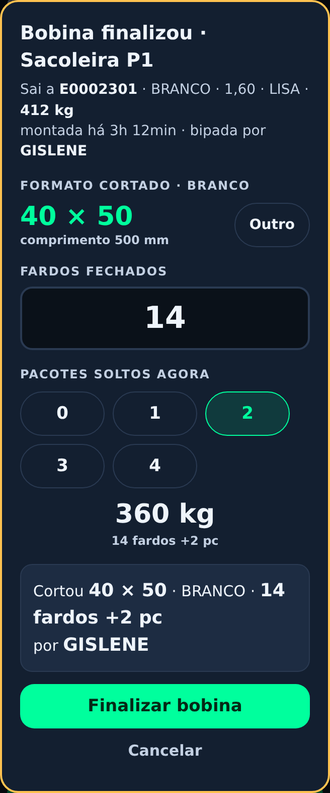
Mesmo formato: Confirmar e bipar a próxima. Vai mudar: toque o formato novo antes.
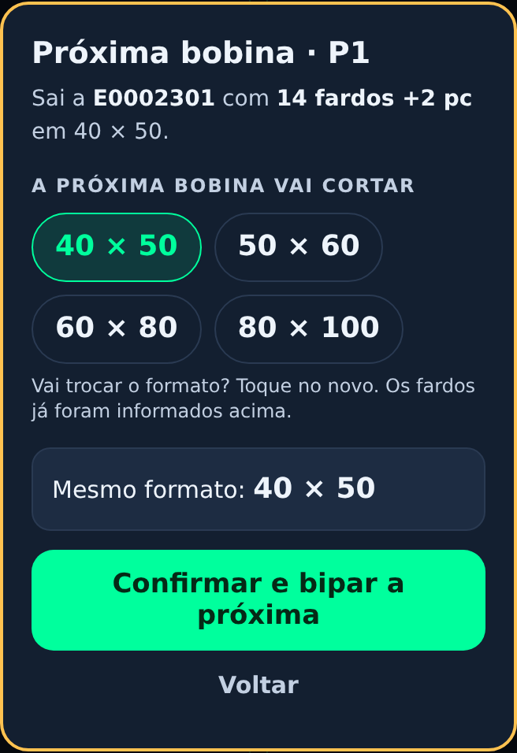
O cartão fica amarelo até bipar a bobina nova. Volte ao passo 2. Ficou vermelho ("cortando sem bobina bipada")? Bipe já.
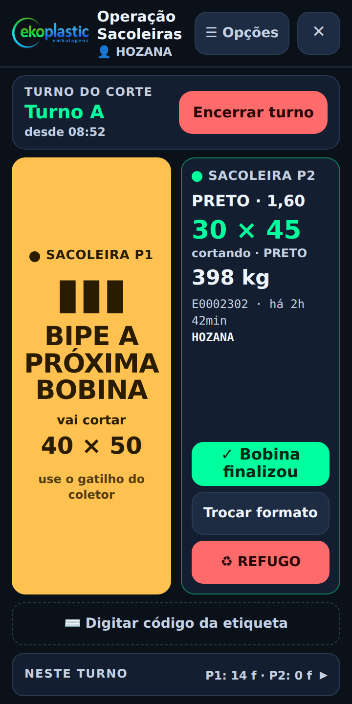
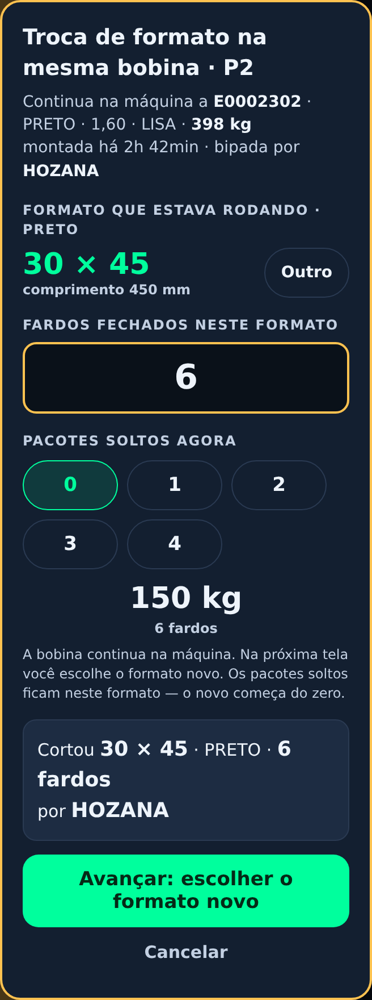
›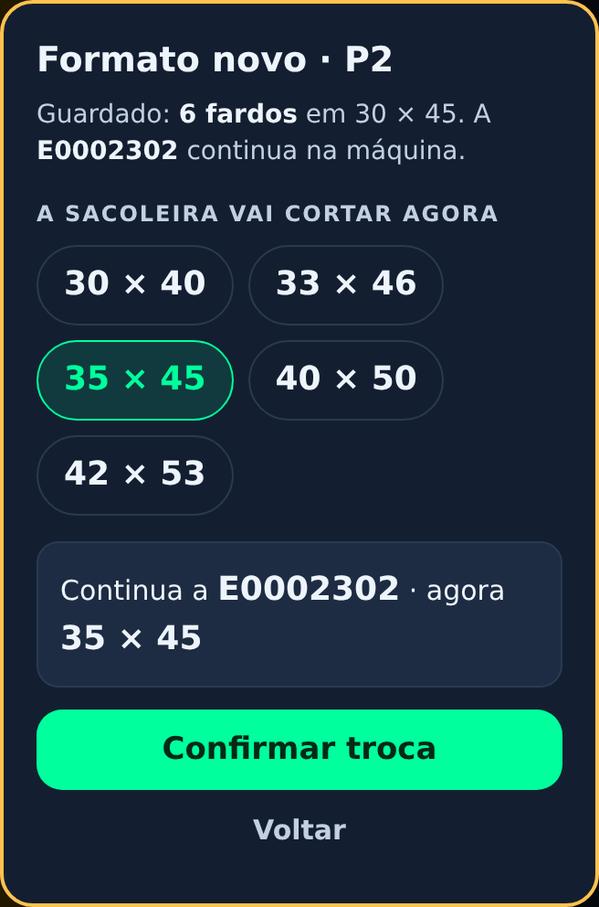
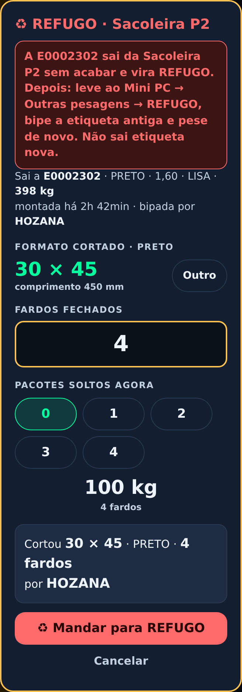
Essa bobina já foi usada. Confira se pegou a etiqueta certa.
Montou a bobina errada? Em Neste turno, toque desfazer e bipe a certa (só antes de lançar fardos). Senão, chame o encarregado.
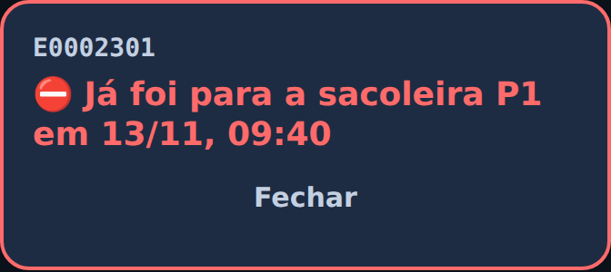
Toque Encerrar turno e digite a senha do supervisor.
Para cada sacoleira com bobina: fardos fechados neste turno e pacotes soltos.
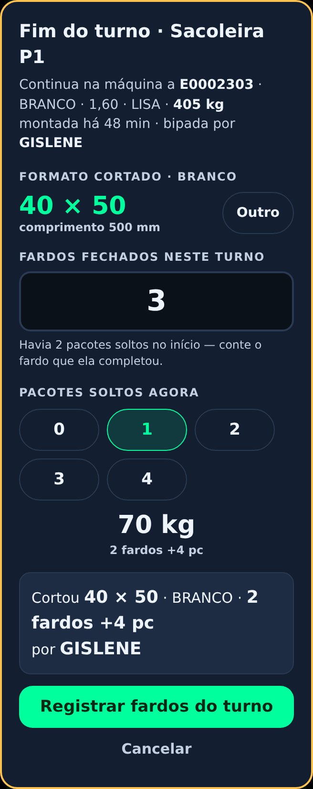
Algo errado? Toque corrigir. Tudo certo: OK.
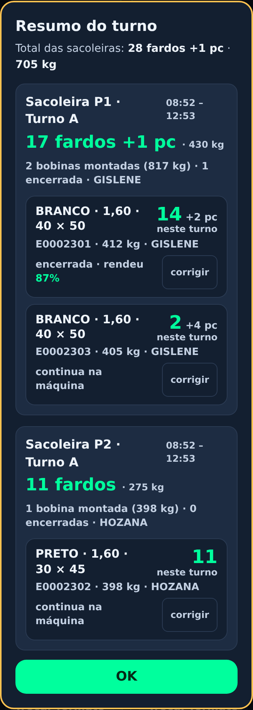